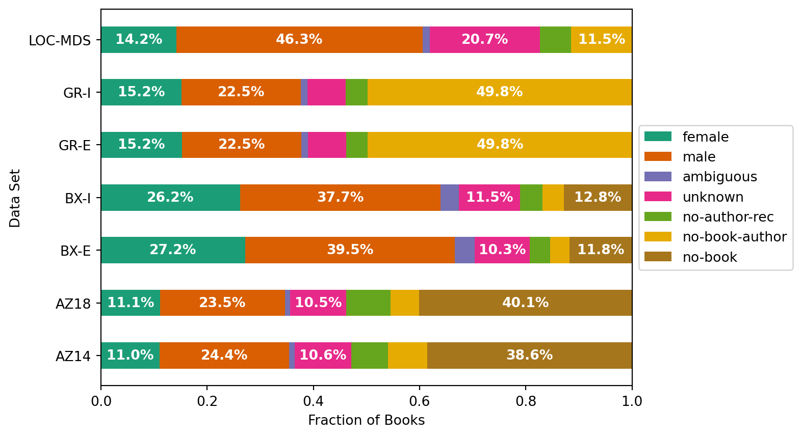
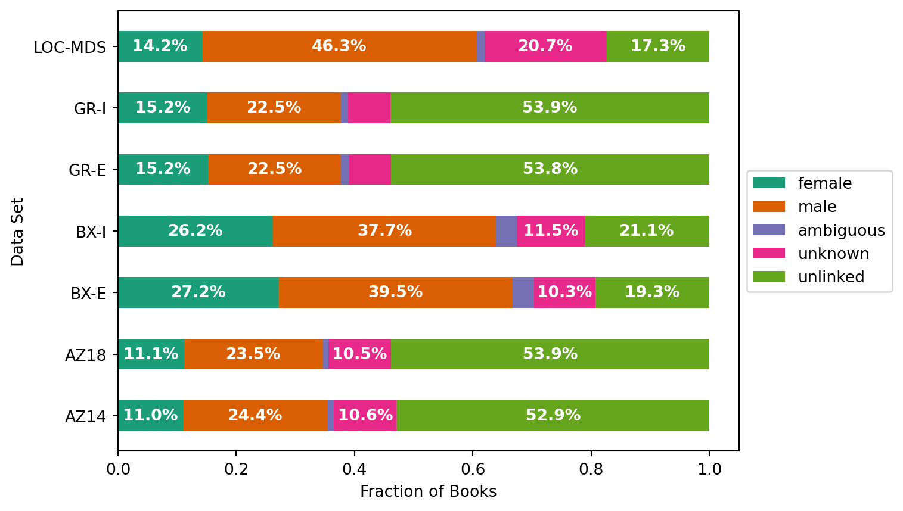
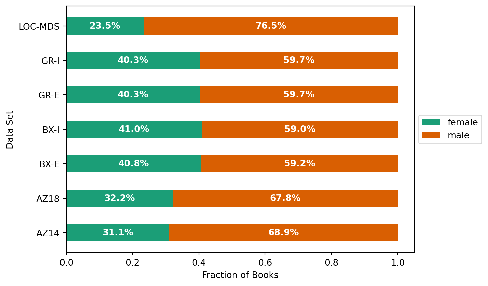
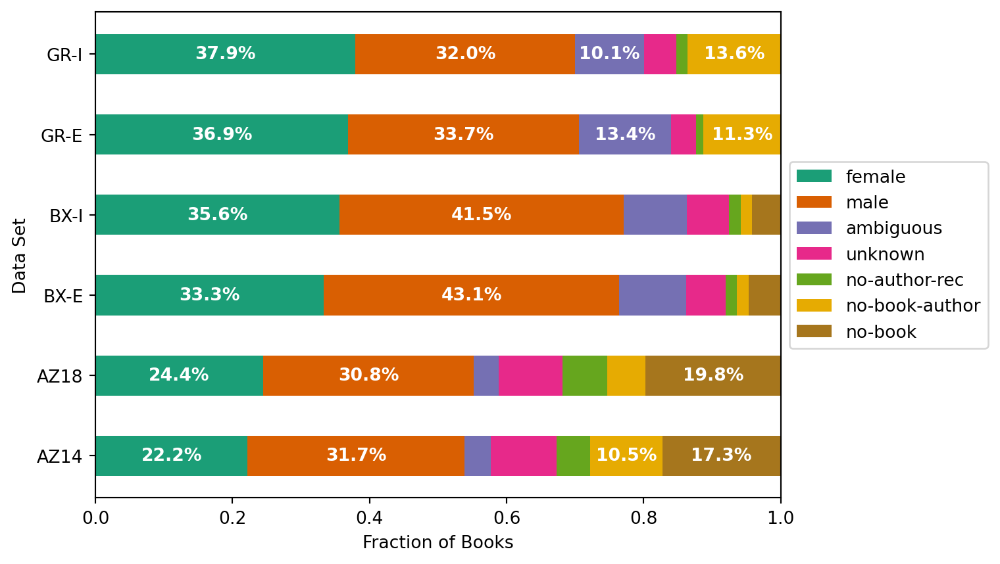
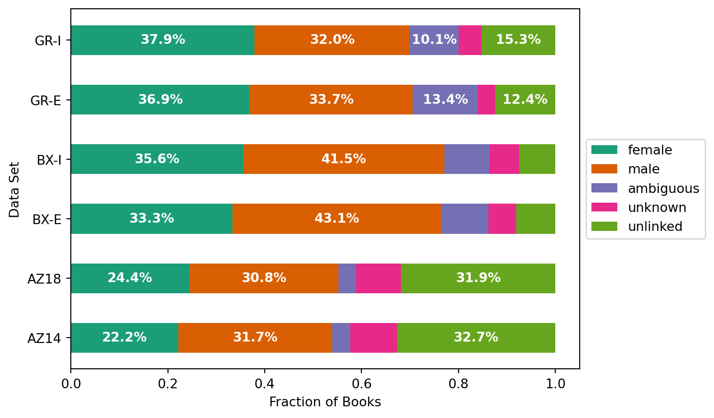
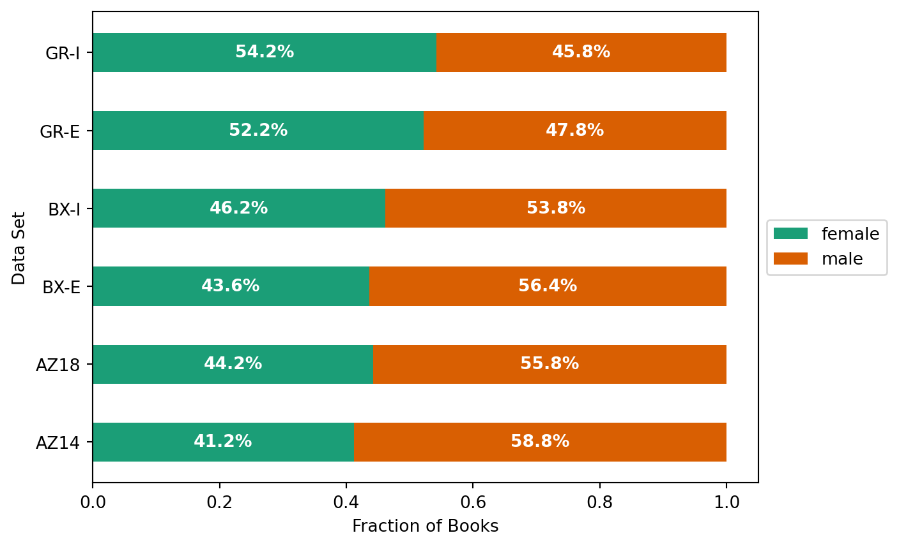

This notebook presents statistics of the book data integration.
Setup#
import pandas as pd
import matplotlib as mpl
import matplotlib.pyplot as plt
import numpy as np
Load Link Stats#
We compute dataset linking statistics as gender-stats.csv as part of the integration. Let’s load those:
link_stats = pd.read_csv('book-links/gender-stats.csv')
link_stats.head()
| dataset | gender | n_books | n_actions | |
|---|---|---|---|---|
| 0 | LOC-MDS | no-author-rec | 306291 | NaN |
| 1 | LOC-MDS | no-book-author | 600216 | NaN |
| 2 | LOC-MDS | female | 743105 | NaN |
| 3 | LOC-MDS | ambiguous | 73989 | NaN |
| 4 | LOC-MDS | male | 2424008 | NaN |
Now let’s define variables for our variou codes. We are first going to define our gender codes. We’ll start with the resolved codes:
link_codes = ['female', 'male', 'ambiguous', 'unknown']
We want the unlink codes in order, so the last is the first link failure:
unlink_codes = ['no-author-rec', 'no-book-author', 'no-book']
all_codes = link_codes + unlink_codes
Processing Statistics#
Now we’ll pivot each of our count columns into a table for easier reference.
book_counts = link_stats.pivot('dataset', 'gender', 'n_books')
book_counts = book_counts.reindex(columns=all_codes)
book_counts.assign(total=book_counts.sum(axis=1))
/tmp/ipykernel_35451/233082166.py:1: FutureWarning: In a future version of pandas all arguments of DataFrame.pivot will be keyword-only.
book_counts = link_stats.pivot('dataset', 'gender', 'n_books')
| gender | female | male | ambiguous | unknown | no-author-rec | no-book-author | no-book | total |
|---|---|---|---|---|---|---|---|---|
| dataset | ||||||||
| AZ14 | 248863.0 | 550877.0 | 24064.0 | 239915.0 | 155511.0 | 167948.0 | 870268.0 | 2257446.0 |
| AZ18 | 318004.0 | 670899.0 | 27977.0 | 300300.0 | 239917.0 | 152438.0 | 1144899.0 | 2854434.0 |
| BX-E | 40256.0 | 58484.0 | 5596.0 | 15281.0 | 5692.0 | 5428.0 | 17481.0 | 148218.0 |
| BX-I | 71441.0 | 102756.0 | 9528.0 | 31440.0 | 11562.0 | 10861.0 | 35009.0 | 272597.0 |
| GR-E | 225840.0 | 334136.0 | 18516.0 | 106501.0 | 60515.0 | 738282.0 | NaN | 1483790.0 |
| GR-I | 228142.0 | 338411.0 | 18709.0 | 108333.0 | 61601.0 | 750118.0 | NaN | 1505314.0 |
| LOC-MDS | 743105.0 | 2424008.0 | 73989.0 | 1084460.0 | 306291.0 | 600216.0 | NaN | 5232069.0 |
act_counts = link_stats.pivot('dataset', 'gender', 'n_actions')
act_counts = act_counts.reindex(columns=all_codes)
act_counts.drop(index='LOC-MDS', inplace=True)
act_counts
/tmp/ipykernel_35451/71450322.py:1: FutureWarning: In a future version of pandas all arguments of DataFrame.pivot will be keyword-only.
act_counts = link_stats.pivot('dataset', 'gender', 'n_actions')
| gender | female | male | ambiguous | unknown | no-author-rec | no-book-author | no-book |
|---|---|---|---|---|---|---|---|
| dataset | |||||||
| AZ14 | 4977284.0 | 7105363.0 | 849025.0 | 2157265.0 | 1100127.0 | 2359170.0 | 3879190.0 |
| AZ18 | 12377052.0 | 15603235.0 | 1844630.0 | 4692726.0 | 3312340.0 | 2820794.0 | 10008921.0 |
| BX-E | 142252.0 | 183945.0 | 41768.0 | 24554.0 | 7130.0 | 7234.0 | 19920.0 |
| BX-I | 401483.0 | 468156.0 | 104008.0 | 69361.0 | 18597.0 | 18882.0 | 47275.0 |
| GR-E | 36335167.0 | 33249747.0 | 13230835.0 | 3570086.0 | 1039410.0 | 11168052.0 | NaN |
| GR-I | 82889862.0 | 69977512.0 | 22091068.0 | 10242726.0 | 3545964.0 | 29784689.0 | NaN |
We’re going to want to compute versions of this table as fractions, e.g. the fraction of books that are written by women. We will use the following helper function:
def fractionalize(data, columns, unlinked=None):
fracs = data[columns]
fracs.columns = fracs.columns.astype('str')
if unlinked:
fracs = fracs.assign(unlinked=data[unlinked].sum(axis=1))
totals = fracs.sum(axis=1)
return fracs.divide(totals, axis=0)
And a helper function for plotting bar charts:
def plot_bars(fracs, ax=None, cmap=mpl.cm.Dark2):
if ax is None:
ax = plt.gca()
size = 0.5
ind = np.arange(len(fracs))
start = pd.Series(0, index=fracs.index)
for i, col in enumerate(fracs.columns):
vals = fracs.iloc[:, i]
rects = ax.barh(ind, vals, size, left=start, label=col, color=cmap(i))
for j, rec in enumerate(rects):
if vals.iloc[j] < 0.1 or np.isnan(vals.iloc[j]): continue
y = rec.get_y() + rec.get_height() / 2
x = start.iloc[j] + vals.iloc[j] / 2
ax.annotate('{:.1f}%'.format(vals.iloc[j] * 100),
xy=(x,y), ha='center', va='center', color='white',
fontweight='bold')
start += vals.fillna(0)
ax.set_xlabel('Fraction of Books')
ax.set_ylabel('Data Set')
ax.set_yticks(ind)
ax.set_yticklabels(fracs.index)
ax.legend(loc='center left', bbox_to_anchor=(1, 0.5))
Resolution of Books#
What fraction of unique books are resolved from each source?
fractionalize(book_counts, link_codes + unlink_codes)
| gender | female | male | ambiguous | unknown | no-author-rec | no-book-author | no-book |
|---|---|---|---|---|---|---|---|
| dataset | |||||||
| AZ14 | 0.110241 | 0.244027 | 0.010660 | 0.106277 | 0.068888 | 0.074397 | 0.385510 |
| AZ18 | 0.111407 | 0.235037 | 0.009801 | 0.105205 | 0.084051 | 0.053404 | 0.401095 |
| BX-E | 0.271600 | 0.394581 | 0.037755 | 0.103098 | 0.038403 | 0.036622 | 0.117941 |
| BX-I | 0.262076 | 0.376952 | 0.034953 | 0.115335 | 0.042414 | 0.039843 | 0.128428 |
| GR-E | 0.152205 | 0.225191 | 0.012479 | 0.071776 | 0.040784 | 0.497565 | NaN |
| GR-I | 0.151558 | 0.224811 | 0.012429 | 0.071967 | 0.040922 | 0.498313 | NaN |
| LOC-MDS | 0.142029 | 0.463298 | 0.014141 | 0.207272 | 0.058541 | 0.114719 | NaN |
plot_bars(fractionalize(book_counts, link_codes + unlink_codes))

fractionalize(book_counts, link_codes, unlink_codes)
| gender | female | male | ambiguous | unknown | unlinked |
|---|---|---|---|---|---|
| dataset | |||||
| AZ14 | 0.110241 | 0.244027 | 0.010660 | 0.106277 | 0.528795 |
| AZ18 | 0.111407 | 0.235037 | 0.009801 | 0.105205 | 0.538549 |
| BX-E | 0.271600 | 0.394581 | 0.037755 | 0.103098 | 0.192966 |
| BX-I | 0.262076 | 0.376952 | 0.034953 | 0.115335 | 0.210685 |
| GR-E | 0.152205 | 0.225191 | 0.012479 | 0.071776 | 0.538349 |
| GR-I | 0.151558 | 0.224811 | 0.012429 | 0.071967 | 0.539236 |
| LOC-MDS | 0.142029 | 0.463298 | 0.014141 | 0.207272 | 0.173260 |
plot_bars(fractionalize(book_counts, link_codes, unlink_codes))

plot_bars(fractionalize(book_counts, ['female', 'male']))

Resolution of Ratings#
What fraction of rating actions have each resolution result?
fractionalize(act_counts, link_codes + unlink_codes)
| gender | female | male | ambiguous | unknown | no-author-rec | no-book-author | no-book |
|---|---|---|---|---|---|---|---|
| dataset | |||||||
| AZ14 | 0.221928 | 0.316816 | 0.037857 | 0.096189 | 0.049053 | 0.105191 | 0.172966 |
| AZ18 | 0.244318 | 0.308001 | 0.036412 | 0.092632 | 0.065384 | 0.055681 | 0.197572 |
| BX-E | 0.333297 | 0.430983 | 0.097862 | 0.057530 | 0.016706 | 0.016949 | 0.046673 |
| BX-I | 0.356000 | 0.415120 | 0.092225 | 0.061503 | 0.016490 | 0.016743 | 0.041919 |
| GR-E | 0.368536 | 0.337241 | 0.134196 | 0.036210 | 0.010542 | 0.113274 | NaN |
| GR-I | 0.379303 | 0.320217 | 0.101089 | 0.046871 | 0.016226 | 0.136295 | NaN |
plot_bars(fractionalize(act_counts, link_codes + unlink_codes))

fractionalize(act_counts, link_codes, unlink_codes)
| gender | female | male | ambiguous | unknown | unlinked |
|---|---|---|---|---|---|
| dataset | |||||
| AZ14 | 0.221928 | 0.316816 | 0.037857 | 0.096189 | 0.327210 |
| AZ18 | 0.244318 | 0.308001 | 0.036412 | 0.092632 | 0.318637 |
| BX-E | 0.333297 | 0.430983 | 0.097862 | 0.057530 | 0.080327 |
| BX-I | 0.356000 | 0.415120 | 0.092225 | 0.061503 | 0.075152 |
| GR-E | 0.368536 | 0.337241 | 0.134196 | 0.036210 | 0.123816 |
| GR-I | 0.379303 | 0.320217 | 0.101089 | 0.046871 | 0.152521 |
plot_bars(fractionalize(act_counts, link_codes, unlink_codes))

plot_bars(fractionalize(act_counts, ['female', 'male']))

Metrics#
Finally, we’re going to write coverage metrics.
book_tots = book_counts.sum(axis=1)
book_link = book_counts['male'] + book_counts['female'] + book_counts['ambiguous']
book_cover = book_link / book_tots
book_cover
dataset
AZ14 0.364927
AZ18 0.356246
BX-E 0.703936
BX-I 0.673980
GR-E 0.389875
GR-I 0.388797
LOC-MDS 0.619469
dtype: float64
book_cover.to_json('book-coverage.json')